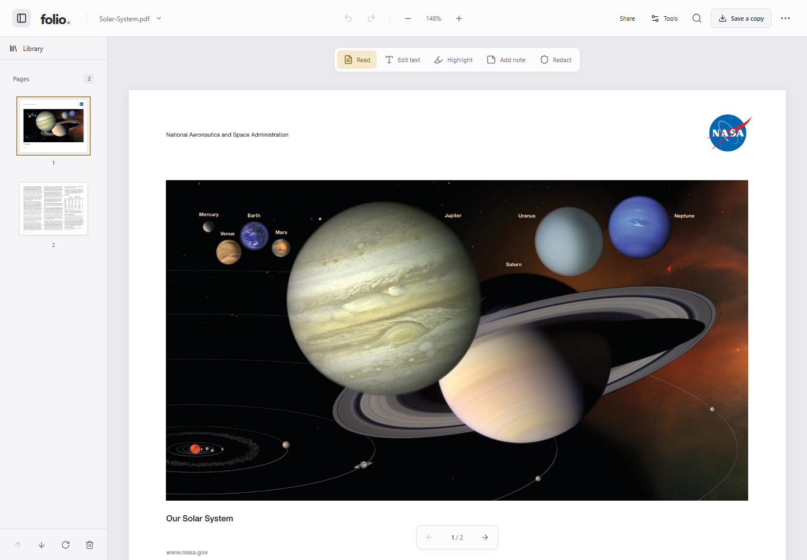

Make the
PDF yours.
A quiet place to read, edit, and organize your PDFs.
Free. Open source. Yours.

Actual app screenshots · PDF: NASA
Your document.
Your workspace.
Keep your attention on the page. Tools appear when you need them. Your files stay on your computer in the desktop app.
EditChange existing text. Highlight, annotate, sign, and fill forms.
OrganizeMerge, split, rotate, and reorder pages. Keep revisions in your library.
ConvertTurn images and text into PDFs. Add free LibreOffice for Office files.
Settle inLight and dark modes. A focused reading view. No subscription.
Free to use. Free to improve.
Folio is open source under AGPL-3.0. Explore the code, report an issue, or help make it better.
Windows preview. Extract the entire ZIP, then open Folio.exe. The app is unsigned. Office conversion needs LibreOffice; OCR needs Tesseract. Online editing is not hosted yet. Collaboration requires a shared server. Setup and limitations.